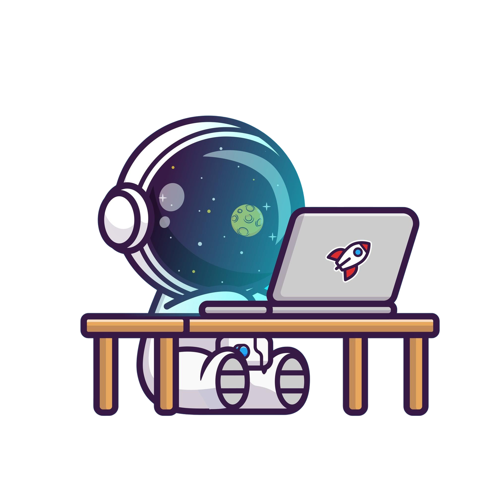

El diseño web consiste en la planificación, diseño, implementación y mantenimiento de sitios web. No se limita simplemente a la edición de datos, sino que abarca aspectos más amplios como el diseño de la arquitectura de información, la interactividad y la integración de medios como texto, imagen, enlaces y audio.

¿Qué es el Diseño Web?
El diseño web es una disciplina que combina creatividad, comunicación visual y tecnología para desarrollar sitios y plataformas digitales que permitan a los usuarios interactuar con la información de manera eficiente. Su función principal es organizar y presentar contenidos en internet mediante una estructura lógica y atractiva que facilite la navegación y mejore la experiencia del usuario.
Para lograrlo, el diseño web se apoya en diversos elementos, como la composición visual, la tipografía, la paleta de colores, las imágenes, los iconos y los recursos multimedia. Todos estos componentes trabajan en conjunto para transmitir mensajes de forma clara y generar una identidad visual coherente con los objetivos del sitio. Asimismo, el diseño web busca establecer una jerarquía de la información que ayude a los usuarios a encontrar rápidamente lo que necesitan.
Además, el diseño web desempeña un papel fundamental en la comunicación digital, ya que influye directamente en la percepción que los usuarios tienen de una marca, empresa, institución o proyecto. Un sitio web estructurado de manera óptima retiene a los visitantes, disminuye la tasa de rebote y proyecta profesionalismo y credibilidad ante el público objetivo.
Actualmente, el diseño web va más allá de la apariencia estética de una página. También considera factores relacionados con la usabilidad, la accesibilidad y la adaptabilidad a diferentes dispositivos y resoluciones de pantalla. Esto permite que los sitios web ofrezcan una experiencia consistente tanto en computadoras de escritorio como en dispositivos móviles.
El diseño web está presente en prácticamente todos los sitios y plataformas que utilizamos en Internet. Algunos ejemplos son:
- Sitios corporativos: páginas de empresas que presentan información sobre sus servicios, historia, misión y formas de contacto. Por ejemplo, Apple o Coca-Cola México.
- Tiendas en línea (e-commerce): sitios diseñados para la venta de productos y servicios, con catálogos, buscadores, carritos de compra y métodos de pago. Por ejemplo, Amazon México o Mercado Libre México.
- Portales educativos: plataformas enfocadas en el aprendizaje y la consulta de información académica, como Khan Academy o Coursera.
- Redes sociales: sitios que permiten la interacción entre usuarios mediante publicaciones, mensajes y contenido multimedia, como Instagram o Facebook.
- Blogs y revistas digitales: páginas enfocadas en compartir artículos, noticias, opiniones o contenido especializado. Por ejemplo, Medium.
- Portafolios creativos: sitios utilizados por diseñadores, fotógrafos, ilustradores o artistas para exhibir sus trabajos y proyectos profesionales.
- Sitios gubernamentales e institucionales: páginas destinadas a proporcionar servicios, trámites e información pública a los ciudadanos.
Ejemplos de elementos de diseño web
También podemos identificar el diseño web en componentes específicos de una página, tales como:
- Menús de navegación
- Botones interactivos
- Banners e imágenes destacadas
- Formularios de contacto